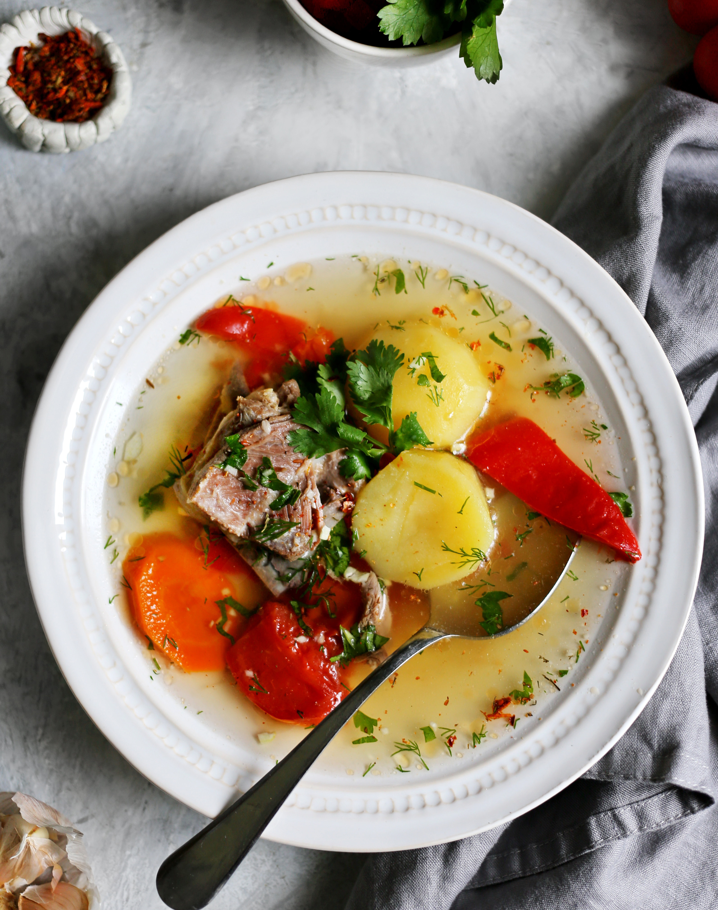

Шурпа в том или ином виде, под разными названиями встречается во многих национальных кухнях (таджикская, азербайджанская, киргизская, казахская, башкирская, турецкая, туркменская, узбекская, уйгурская, молдавская, кавказская, татарская, чувашская) — сорба, шурбо, шулюм, она же чорба на Балканах. Возможны и некоторые отличия в рецепте, но основа неизменна — наваристый бульон с овощами и пряными травами. Кстати, не всегда используют традиционную баранину, встречаются варианты шурпы и на говядине. Ароматный бульон — основа хорошего супа. А самый насыщенный и вкусный мясной бульон можно получить только путем длительного томления. Поэтому стоит запастись временем и рассчитывать, что уйдет минимум 3 часа на его приготовление, плюс не забудьте про время на приготовление самого супа. Можно сделать бульон заранее, и даже с запасом, чтобы заморозить часть для следующего раза. Кипение следует исключить, выставить минимальный огонь, тогда бульон будет прозрачным. Для ароматизации бульона, кроме привычных лука и моркови, можно использовать корень петрушки, сельдерея или пастернака, лавровый лист, чеснок, букет гарни или стебли зелени, которую будете использовать для подачи, — перевязать их кулинарной нитью и добавить к мясу минут за 10 до окончания варки бульона. Для наваристого супа лучше брать баранью голень или ногу, мясо с костью — шею или лопатку. Можно попросить мясника разрубить мясо на порционные куски, особенно если берете мясо на кости. Очень рекомендую перед самой подачей добавить в шурпу рубленый чеснок с зеленью, это придаст особую насыщенность вкуса ароматному и наваристому супу. Подавать шурпу следует горячей.